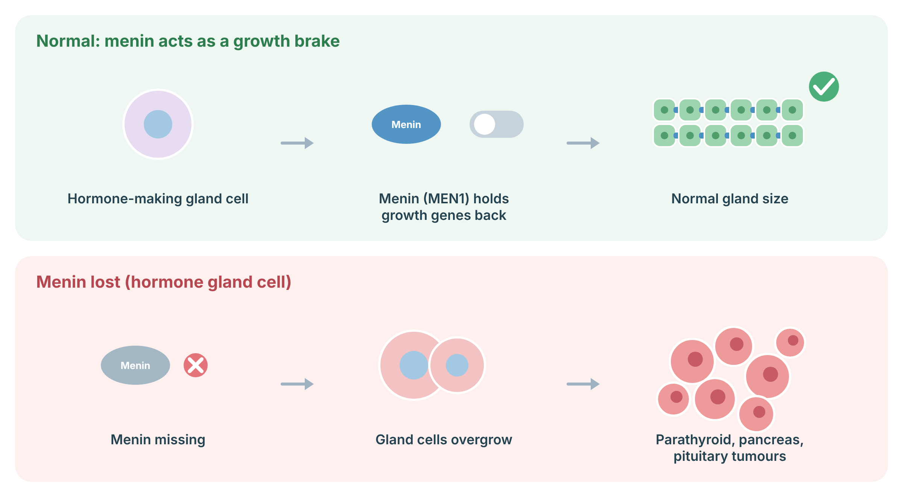

Understanding MEN1
MEN1 is an inherited condition that causes tumours in several hormone-making glands. Most are benign (non-cancerous), but some can make too much hormone, and some pancreatic and thymus tumours can spread. Because tumours can be multiple and appear at a young age, care by a specialist endocrine team is recommended.
Menin, the protein made by the MEN1 gene, works as a growth brake inside the nucleus of hormone-making (endocrine) cells: it helps keep growth genes switched down. When menin is missing, cells of the parathyroid glands, pancreas and pituitary gland can overgrow and form tumours.
MEN1: Tumours usually arise when a cell loses its second working MEN1 copy.

Sources: Majer AD, et al. Genes (Basel) 2024;15 (PubMed); Thakker 2012 (PubMed).
Associated tumours
The three main glands affected are the parathyroids, the pancreas/duodenum and the pituitary.
| Tumour | Approximate lifetime frequency / comment |
|---|---|
| Primary hyperparathyroidism (overactive parathyroid glands) | About 95% |
| Duodeno-pancreatic neuroendocrine tumours (non-functioning, gastrinoma, insulinoma) | About 80%; a leading cause of MEN1-related death when they spread |
| Pituitary adenoma (most often prolactinoma or non-functioning) | About 50%; usually good prognosis and response to therapy |
| Thymic, lung and stomach neuroendocrine tumours | Thymic tumours are among the most aggressive |
| Adrenal cortical tumours, meningioma, skin lesions (angiofibroma, collagenoma), lipoma | Less common |
| Breast cancer (women) | About 2–3-fold higher risk than average |
Frequencies from Pieterman & Valk 2022 and Thakker 2012.
Surveillance
Surveillance means regular blood tests and scans to find tumours early. It usually starts in childhood and continues for life.
Management
Treatment is similar to the same tumours outside MEN1, but tumours are often multiple, so decisions are made by an experienced team.
Genetic counselling
Each child of a person with MEN1 has a 1 in 2 chance of inheriting it. Guidelines recommend offering genetic testing to at-risk children early (at least in the first decade), so that surveillance can start for carriers and stop for non-carriers.
References
- Giusti F, et al. Multiple Endocrine Neoplasia Type 1. In: GeneReviews. Seattle (WA): University of Washington. Bookshelf NBK1538; PubMed.
- Thakker RV, et al. Clinical practice guidelines for multiple endocrine neoplasia type 1 (MEN1). J Clin Endocrinol Metab 2012;97:2990–3011 (PubMed).
- Pieterman CRC, Valk GD. Update on the clinical management of multiple endocrine neoplasia type 1. Clin Endocrinol (Oxf) 2022;97:409–23 (PubMed).
- Majer AD, et al. Menin in Cancer. Genes (Basel) 2024;15 (PubMed).